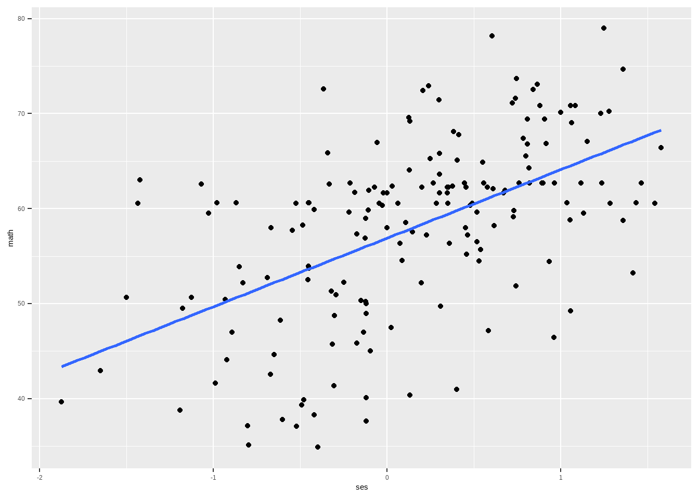
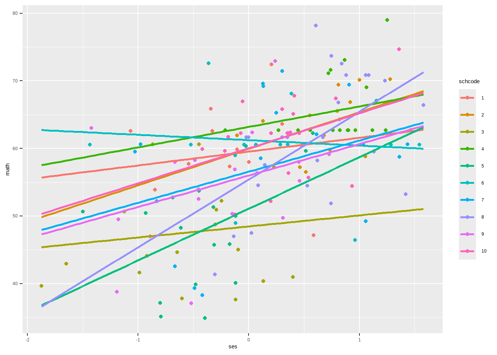
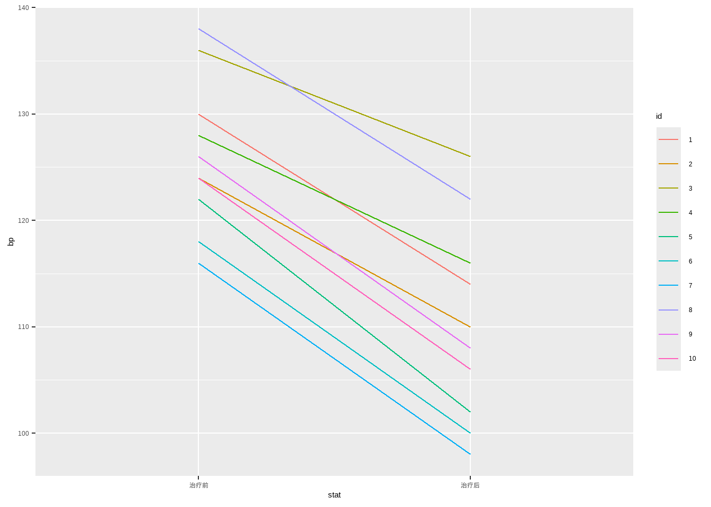

library(dplyr) # 数据操作
library(ggplot2) # 可视化
library(lme4) # 多水平模型
library(lmerTest) # 计算P值
library(performance) # 计算模型表现
data <- read.csv('datasets/heck2011.csv') # 加载数据35 多水平模型
35.1 理论知识
理论知识我就不献丑了，直接给大家推荐高手的解读！
关于多水平模型（multi-level models，MLM）的概念和理论知识，强烈推荐阅读冯国双老师的几篇文章，这是我目前见过的写的最通俗易懂的。多水平模型、混合模型、随机效应模型、固定效应模型、随机系数模型、方差成分模型等等，全都详细介绍到了：
- 多水平模型（一）——是什么？为什么？
- 多水平模型（二）——什么是随机效应
- 多水平模型（三）——随机截距模型
- 多水平模型（四）——随机系数模型
- 多水平模型（五）——常见的几个实际问题
- 多组必须做两两比较吗？从固定效应和随机效应谈起
- 重复测量数据分析及结果详解（之三）——多水平模型
我之前接触多水平模型很少，对一些概念很模糊，但是读完这些推文后，我感到豁然开朗、恍然大悟，强烈推荐大家仔细读一读，对于初学者帮助很大。
上面是理论知识，下面是R语言实战。
35.2 数据探索
数据可以从这个网站免费下载：https://www.learn-mlms.com/13-appendix.html。或者加入QQ群免费下载。
简单介绍下这个数据，一共有6871行，各个变量的含义如下，其中math是因变量，建模目的是用其他变量预测学生的数学成绩（math），或者叫探索和学生成绩有关系的变量：
schcode:学校id，一共有419所学校Rid:每个学校内的学生id，每个学校内都是从1开始id:学生id，从1到6871female:是否是女性，1=是，0=否ses:衡量学校内学生的社会经济地位构成的Z-scorefemses:以性别（女性）为中心的测量学生社会经济地位的变量math:学生数学成绩测试分数ses_mean:以学校为单位衡量学生社会经济地位的均值pro4yrc:每个学校中计划就读四年制大学的学生比例public:学校类型，1=公立学校，0=私立学校
str(data)
## 'data.frame': 6871 obs. of 10 variables:
## $ schcode : int 1 1 1 1 1 1 1 1 1 1 ...
## $ Rid : int 1 2 3 4 5 6 7 8 9 10 ...
## $ id : int 6701 6702 6703 6704 6705 6706 6707 6708 6709 6710 ...
## $ female : int 1 1 1 0 0 0 0 1 0 1 ...
## $ ses : num 0.586 0.304 -0.544 -0.848 0.001 -0.106 -0.33 -0.891 0.207 -0.341 ...
## $ femses : num 0.586 0.304 -0.544 0 0 0 0 -0.891 0 -0.341 ...
## $ math : num 47.1 63.6 57.7 53.9 58 ...
## $ ses_mean: num -0.267 -0.267 -0.267 -0.267 -0.267 ...
## $ pro4yrc : num 0.0833 0.0833 0.0833 0.0833 0.0833 ...
## $ public : int 0 0 0 0 0 0 0 0 0 0 ...这个数据很明显是有层次的，学生是分别属于不同的学校的，所以这是一个两个水平的数据。学生是1级水平，学校是2级水平。
不同学校之间的水平是有差异的，为了演示先选择其中10个学校（一共有419个学校）：
data_sub <- data %>%
filter(schcode <= 10)如果不考虑学校水平的差异，探索社会经济地位（ses）和成绩（math）之间的关系，可以画出如下的散点图和拟合线：
data_sub %>%
ggplot(mapping = aes(x = ses, y = math)) +
geom_point() +
geom_smooth(method = "lm", se = FALSE, fullrange = TRUE)
如果考虑到学校之间的不同水平，按照学校分别拟合，会得到如下的图：
data_sub %>%
ggplot(mapping = aes(x = ses, y = math, colour = factor(schcode))) +
geom_point() +
geom_smooth(mapping = aes(group = schcode), method = "lm", se = FALSE, fullrange = TRUE) +
labs(colour = "schcode")
每个学校的ses的截距和斜率都是不一样的，所以不同学校对学生成绩的影响也是不同的，普通的多元线性回归没有考虑到这种差异，但是多水平模型可以发现这些差异并量化它们。
35.3 空模型
先给大家演示一下最简单的，也就是“只有随机截距的模型”（random intercept only model），又被称为空模型（null model）。在这种模型中，没有任何自变量来解释学生成绩的差异，模型只考虑了学校间的差异，这些差异是由随机截距来表示的。
null_model <- lmer(math ~ (1|schcode), data = data)
summary(null_model)
## Linear mixed model fit by REML. t-tests use Satterthwaite's method [
## lmerModLmerTest]
## Formula: math ~ (1 | schcode)
## Data: data
##
## REML criterion at convergence: 48877.3
##
## Scaled residuals:
## Min 1Q Median 3Q Max
## -3.6336 -0.5732 0.1921 0.6115 5.2989
##
## Random effects:
## Groups Name Variance Std.Dev.
## schcode (Intercept) 10.64 3.262
## Residual 66.55 8.158
## Number of obs: 6871, groups: schcode, 419
##
## Fixed effects:
## Estimate Std. Error df t value Pr(>|t|)
## (Intercept) 57.6742 0.1883 416.0655 306.3 <2e-16 ***
## ---
## Signif. codes: 0 '***' 0.001 '**' 0.01 '*' 0.05 '.' 0.1 ' ' 1在lme4和lmerTest中（lmerTest可以在结果中给出P值，lme4不会给出P值，这是这两个包的差别），拟合多水平模型的基本语法是：
# DV是因变量，IV是自变量
lmer(DV ~ 1 + IV1 + IV2 + ... + IVp + (random_effect1 + random_effect2 + ... + random_effect3 | grouping_variable), data = dataset)该数据的因变量是math，波浪号右边的(1|schcode)表示分组变量schcode的随机截距，空模型没有其他自变量。
结果主要是两部分：
- Random effects：随机效应的估计
- Fixed effects：固定效应的估计
先看固定效应：截距的固定效应为57.67，表示所有学校的平均数学成绩，此时这个截距其实就是因变量的平均值，即：mean(data$math)=57.73391（微小差异，可以忽略）；
再看随机效应：不同学校之间成绩的方差（Variance）为10.64，不同学校之间的学生成绩会围绕总体均值（也就是此时的截距57.67）波动，其标准差（Std.Dev）是3.262，同一个学校内不同学生之间成绩的方差为66.55，标准差为8.158。
组内相关系数（intraclass correlation coefficient，ICC）是衡量多水平模型中群体间变异（即随机效应）与总变异（群体间变异+群体内变异）之比的一种指标。在多水平模型中，ICC用来评估因变量的变异有多少可以归因于群体间的差异，而有多少是群体内的个体差异。
若ICC为0，说明群体间的差异为0，说明数据不存在层次结构，在本例中也就是学校之间没有差异，可以不使用多水平模型，使用普通的多元线性回归即可。
根据模型输出，该例的总方差为10.64+66.55=77.19（var(data$math)），ICC=10.64/77.19=0.138；也就是说成绩总变异中的13.8%是学校不同导致的，剩下的86.2%的变异是由同一学校内学生之间的差异造成的。也就是说，大部分成绩变异来源于学校内部的差异，而学校之间的差异相对较小。
ICC也可以使用performance包自动计算：
performance::icc(null_model)
## # Intraclass Correlation Coefficient
##
## Adjusted ICC: 0.138
## Unadjusted ICC: 0.138由于没有其他自变量，所以调整的ICC和未调整的ICC是一样的。
35.4 添加1级水平的固定效应
上面演示的空模型没有自变量，下面我们添加一个社会经济状况（ses）作为自变量，这个ses是在水平1单位（不同的学生，不同的学校属于水平2单位）间变化的，所以这个变量产生的效应属于水平1单位的固定效应。
像这种只有随机截距，没有随机斜率（但是有自变量，不是“空模型”）的多水平模型被称为随机截距模型，又叫方差成分模型，相关概念的理解请参考本文开头推荐的几篇文章。
用lme4拟合随机截距模型：
# RMEL表示限制性最大似然估计，这也是默认方法
ses_l1 <- lmer(math ~ ses + (1|schcode), data = data, REML = TRUE)
summary(ses_l1)
## Linear mixed model fit by REML. t-tests use Satterthwaite's method [
## lmerModLmerTest]
## Formula: math ~ ses + (1 | schcode)
## Data: data
##
## REML criterion at convergence: 48215.4
##
## Scaled residuals:
## Min 1Q Median 3Q Max
## -3.7733 -0.5540 0.1303 0.6469 5.6908
##
## Random effects:
## Groups Name Variance Std.Dev.
## schcode (Intercept) 3.469 1.863
## Residual 62.807 7.925
## Number of obs: 6871, groups: schcode, 419
##
## Fixed effects:
## Estimate Std. Error df t value Pr(>|t|)
## (Intercept) 57.5960 0.1329 375.6989 433.36 <2e-16 ***
## ses 3.8739 0.1366 3914.6382 28.35 <2e-16 ***
## ---
## Signif. codes: 0 '***' 0.001 '**' 0.01 '*' 0.05 '.' 0.1 ' ' 1
##
## Correlation of Fixed Effects:
## (Intr)
## ses -0.025先看固定效应：Intercept的估计值为57.5960，表示当所有自变量都为0的时候，因变量的预测值；ses的估计值为3.8739，表示ses每增加一个单位，数学成绩可以提高3.8739分；固定效应的解读和普通的多元线性回归没有差别。
加入自变量后，我们可以发现固定效应中截距的值发生了变化，因为此时的截距不再是因变量的平均值，它是一个基于当前模型的预测值。
再看随机效应：schcode的方差为3.469，残差的方差为62.807，该结果与上面的模型的结果解读是类似的。schcode作为分组变量，它的方差越大说明这个变量对因变量的影响越大，残差的方差表示模型无法解释的随机误差部分，这个值越大说明模型无法解释的随机误差越大。
未调整的ICC可以量化分层变量（这里是schcode）所能解释的方差（变异）比例。在模型中加入ses这个自变量后，未调整的ICC=0.046：
performance::icc(ses_l1)
## # Intraclass Correlation Coefficient
##
## Adjusted ICC: 0.052
## Unadjusted ICC: 0.046说明在考虑社会经济地位的影响后，数学成绩差异中有4.6%是学校不同造成的。可以看到加入ses这个变量后，不同学校能够解释的变异减少了（13.8%到4.6%），这个也很好理解，因为有一部分变异被ses解释了，另外残差的变异也减小了（66.55到62.807），也是这个原因导致的。
多水平模型肯定是要比单水平模型的拟合程度更好的，因为它能够解释分组变量导致的变异，也就是让不能解释的变异更少了。下面我们拟合一个普通的多元线性回归，并比较一下两个模型。
f <- lm(math ~ ses, data = data)
compare_performance(f,ses_l1,metrics = "common") # 比较下两个模型
## # Comparison of Model Performance Indices
##
## Name | Model | AIC (weights) | BIC (weights) | RMSE | R2
## ----------------------------------------------------------------------------
## f | lm | 48304.0 (<.001) | 48324.5 (<.001) | 8.131 | 0.143
## ses_l1 | lmerModLmerTest | 48219.1 (>.999) | 48246.4 (>.999) | 7.810 |
##
## Name | R2 (adj.) | R2 (cond.) | R2 (marg.) | ICC
## ----------------------------------------------------
## f | 0.143 | | |
## ses_l1 | | 0.167 | 0.121 | 0.052结果表明，AIC、BIC、RMSE都是多水平模型更小，也就是模型表现更好。
多元线性回归中常用的提取结果的方法也都适用于多水平模型，比如计算可信区间等：
confint(ses_l1)
## 2.5 % 97.5 %
## .sig01 1.575429 2.144559
## .sigma 7.789560 8.063828
## (Intercept) 57.335234 57.856673
## ses 3.596455 4.15274535.5 添加2级水平的固定效应
前面我们添加了ses作为1级水平的自变量，以解释学生在数学成绩方面的部分差异。下面我们再添加一个在水平2单位（不同的学校）间变化的自变量，该自变量在不同的学校间是不同的，但是在同一所学校内的所有学生中是相同的，符合条件的自变量有3个：
ses_mean:以学校为单位衡量学生社会经济地位的均值pro4yrc:每个学校中计划就读四年制大学的学生比例public:学校类型，1=公立学校，0=私立学校
我们选择public作为水平2单位的固定效应，这个模型依然是一个随机截距模型，或者叫方差成分模型：
ses_l1_public_l2 <- lmer(math ~ ses + public + (1|schcode),
data = data, REML = TRUE)
summary(ses_l1_public_l2)
## Linear mixed model fit by REML. t-tests use Satterthwaite's method [
## lmerModLmerTest]
## Formula: math ~ ses + public + (1 | schcode)
## Data: data
##
## REML criterion at convergence: 48216
##
## Scaled residuals:
## Min 1Q Median 3Q Max
## -3.7718 -0.5541 0.1309 0.6477 5.6916
##
## Random effects:
## Groups Name Variance Std.Dev.
## schcode (Intercept) 3.486 1.867
## Residual 62.807 7.925
## Number of obs: 6871, groups: schcode, 419
##
## Fixed effects:
## Estimate Std. Error df t value Pr(>|t|)
## (Intercept) 57.63143 0.25535 381.81733 225.693 <2e-16 ***
## ses 3.87338 0.13673 3928.37427 28.329 <2e-16 ***
## public -0.04859 0.29862 385.93649 -0.163 0.871
## ---
## Signif. codes: 0 '***' 0.001 '**' 0.01 '*' 0.05 '.' 0.1 ' ' 1
##
## Correlation of Fixed Effects:
## (Intr) ses
## ses 0.013
## public -0.854 -0.031先看固定效应：Intercept的估计值为57.5960，表示当所有自变量都为0的时候，因变量的预测值；ses的估计值为3.87338，表示ses每增加一个单位，数学成绩可以提高3.87338分；public的估计值为-0.04859，说明相对于私立学校，公立学校在数学成绩上平均降低0.04859分。固定效应的解读和普通的多元线性回归没有差别。
再看随机效应：结果解读和上面一个模型的解读类似的，就不再重复了。schcode的方差变大了一些，残差的方差没有变化。
理论上如果新加入的自变量能够解释更多的因变量变异，那么残差的变异（方差）通常会减少，群体间（在本例中也就是学校间）的变异也会减少，因为这部分变异都被新加入的自变量解释了。但是很明显我们新加入的这个public自变量不太行，它几乎解释不了因变量的变异，从它的系数也可以看出来，只有-0.04859，比ses差远了。说明公立学校和私立学校对数学成绩影响很小（P值也表明这个变量没有统计学意义）。
我们也可以通过计算模型的一些指标看看这个自变量到底行不行，并且和前面的模型比较一下：
compare_performance(null_model,ses_l1,ses_l1_public_l2)
## # Comparison of Model Performance Indices
##
## Name | Model | AIC (weights) | AICc (weights)
## ----------------------------------------------------------------------
## null_model | lmerModLmerTest | 48881.8 (<.001) | 48881.8 (<.001)
## ses_l1 | lmerModLmerTest | 48219.1 (0.729) | 48219.1 (0.729)
## ses_l1_public_l2 | lmerModLmerTest | 48221.1 (0.271) | 48221.1 (0.271)
##
## Name | BIC (weights) | R2 (cond.) | R2 (marg.) | ICC | RMSE | Sigma
## ------------------------------------------------------------------------------------
## null_model | 48902.3 (<.001) | 0.138 | 0.000 | 0.138 | 7.977 | 8.158
## ses_l1 | 48246.4 (0.988) | 0.167 | 0.121 | 0.052 | 7.810 | 7.925
## ses_l1_public_l2 | 48255.2 (0.012) | 0.167 | 0.121 | 0.053 | 7.810 | 7.925结果发现，加入public后，AIC、BIC还变大了，R2没啥太大的变化，充分说明这个变量真的作用不大，可以不加。
35.6 具有随机斜率的MLM
前面我们选择了10个学校，以展示了不同学校间数学成绩（math）与社会经济状况（ses）之间的关系：

从图中可以看出，不同学校ses的截距和斜率值差异很大。例如，学校3的截距约为38，斜率较小且为正值，而学校8的截距约为55，斜率较大且为正值。
在ses_l1这个模型中，我们假定每个学校ses的斜率是相同的，只估计了随机截距的变异，但是从图中可以看出，其实每个学校ses的斜率都是不一样的。也就是说，我们只估计了ses的平均效应，却忽略了不同学校的ses是不同的。
下面我们在模型中添加一个随机斜率项来模拟学校间ses斜率的这种变异。
在lme4的语法中，只需要将想要估计的具有不同斜率的变量名字放在|前面即可：
# 估计ses的随机斜率和随机截距
ses_l1_random <- lmer(math ~ ses + (ses|schcode),
data = data, REML = TRUE)
summary(ses_l1_random)
## Linear mixed model fit by REML. t-tests use Satterthwaite's method [
## lmerModLmerTest]
## Formula: math ~ ses + (ses | schcode)
## Data: data
##
## REML criterion at convergence: 48190.1
##
## Scaled residuals:
## Min 1Q Median 3Q Max
## -3.8578 -0.5553 0.1290 0.6437 5.7098
##
## Random effects:
## Groups Name Variance Std.Dev. Corr
## schcode (Intercept) 3.2042 1.7900
## ses 0.7794 0.8828 -1.00
## Residual 62.5855 7.9111
## Number of obs: 6871, groups: schcode, 419
##
## Fixed effects:
## Estimate Std. Error df t value Pr(>|t|)
## (Intercept) 57.6959 0.1315 378.6378 438.78 <2e-16 ***
## ses 3.9602 0.1408 1450.7730 28.12 <2e-16 ***
## ---
## Signif. codes: 0 '***' 0.001 '**' 0.01 '*' 0.05 '.' 0.1 ' ' 1
##
## Correlation of Fixed Effects:
## (Intr)
## ses -0.284
## optimizer (nloptwrap) convergence code: 0 (OK)
## boundary (singular) fit: see help('isSingular')上面的公式也可以写成math~ses+(1+ses|schcode)，1表示随机截距项，这是默认设置，也可以仅使用(ses|schcode)估计随机截距和随机斜率。如果你想从模型中排除随机截距，需要写成(0+ses|schcode)来覆盖默认设置。像这种既有随机截距又有随机斜率的模型又被称为随机系数模型。
先看固定效应：Intercept的估计值为57.6959，表示当所有自变量都为0的时候，因变量的预测值；ses的估计值为3.9602，表示ses每增加一个单位，数学成绩可以提高3.9602分。固定效应的解读和普通的多元线性回归没有差别。
再看随机效应：schcode（Intercept）的方差为3.2042，标准差是1.7900，它衡量的是不同学校之间截距的变异。中间的ses的方差为0.7794，标准差为0.8828，它衡量的不同学校之间斜率的变异，意思是不同学校的ses的斜率围绕总体平均斜率变化的方差为0.7794。残差的方差为62.5855，标准差为7.9111，它衡量的是模型无法解释的变异，可以发现在考虑了随机斜率后，残差的方差又变小了（62.807到62.5855）。Corr是-1表示随机截距和随机斜率的相关系数是-1，说明有些学校的截距越高，斜率就越低（结合上面的图看，是不是有这种趋势），也就是说：随着平均数学成绩的增加，ses与数学成绩之间的关系降低。
如果想查看每个学校的截距和斜率，可以使用ranef：
head(ranef(ses_l1_random))
## $schcode
## (Intercept) ses
## 1 0.9746642943 -0.4806908392
## 2 1.0450460989 -0.5154021638
## 3 -3.4842479301 1.7183824946
## 4 1.8810910566 -0.9277278791
## 5 -3.8147866269 1.8813995708
## 6 1.5468720742 -0.7628957373
## 7 -0.5122881335 0.2526533641
## 8 0.2048295030 -0.1010190547
## 9 -0.8897622544 0.4388183369
## 10 1.2626598135 -0.6227262134
## 11 -1.1521785159 0.5682383780
## 12 -1.4680255383 0.7240097253
## 13 1.3533164954 -0.6674368248
## 14 0.6994867551 -0.3449771139
## 15 1.3147915034 -0.6484368359
## 16 -0.3814181351 0.1881101057
## 17 -1.4833089703 0.7315473008
## 18 0.7002622200 -0.3453595624
## 19 2.4523232121 -1.2094516129
## 20 0.5684136873 -0.2803337046
## 21 -0.4109023544 0.2026513115
## 22 0.8768327142 -0.4324416680
## 23 0.3248492751 -0.1602111328
## 24 0.8884441467 -0.4381682646
## 25 -0.7109596957 0.3506354082
## 26 2.2119758881 -1.0909156641
## 27 -0.8875599376 0.4377321850
## 28 1.8412254351 -0.9080667104
## 29 0.9834084843 -0.4850033518
## 30 -0.9295033738 0.4584181029
## 31 0.4621769318 -0.2279392181
## 32 0.5841744018 -0.2881066692
## 33 -2.2225902669 1.0961505277
## 34 -0.0348041303 0.0171649118
## 35 0.7121683165 -0.3512314832
## 36 -1.9271552831 0.9504461132
## 37 2.5177534943 -1.2417209157
## 38 -0.7534024732 0.3715675943
## 39 0.6561454204 -0.3236017720
## 40 -0.4178972897 0.2061011161
## 41 0.7824983634 -0.3859172816
## 42 0.0002114307 -0.0001042747
## 43 0.2795891037 -0.1378894473
## 44 0.5440628359 -0.2683242042
## 45 1.6722426247 -0.8247267446
## 46 0.2647420348 -0.1305670800
## 47 -2.4382522920 1.2025120313
## 48 1.4687945663 -0.7243889991
## 49 -0.6317500158 0.3115702987
## 50 -2.2638586950 1.1165035410
## 51 0.0285971816 -0.0141037312
## 52 1.4662213769 -0.7231199380
## 53 1.5691025893 -0.7738595174
## 54 0.8109670452 -0.3999576385
## 55 -2.3250045379 1.1466598181
## 56 1.0791228008 -0.5322083180
## 57 0.3420626272 -0.1687005180
## 58 0.6625560973 -0.3267634285
## 59 1.2356550397 -0.6094078356
## 60 -0.9610219938 0.4739626468
## 61 0.3726567587 -0.1837891170
## 62 -3.9059760855 1.9263729402
## 63 0.2585462819 -0.1275114211
## 64 -0.0218096074 0.0107561943
## 65 1.1034727974 -0.5442173968
## 66 -0.3527911498 0.1739916757
## 67 1.1310601669 -0.5578231028
## 68 0.2000217301 -0.0986479282
## 69 -1.4852485358 0.7325038675
## 70 1.1767003895 -0.5803322241
## 71 -1.0605617265 0.5230542549
## 72 -3.3378392986 1.6461757990
## 73 -0.7939026197 0.3915417018
## 74 1.0145970807 -0.5003851326
## 75 0.8006019742 -0.3948457300
## 76 -0.1038921476 0.0512381585
## 77 0.7675631221 -0.3785514289
## 78 -1.0253444384 0.5056855796
## 79 -0.6845356850 0.3376034546
## 80 0.6544003463 -0.3227411258
## 81 -1.1140059544 0.5494122029
## 82 -0.2377006531 0.1172306476
## 83 0.6114819657 -0.3015743789
## 84 1.6532069006 -0.8153385910
## 85 -0.4189105707 0.2066008521
## 86 -0.6649549090 0.3279464889
## 87 1.0218902721 -0.5039820329
## 88 1.1589252684 -0.5715657823
## 89 -0.1442865016 0.0711600907
## 90 1.4381502588 -0.7092756540
## 91 0.1532970629 -0.0756039739
## 92 -0.2220361267 0.1095051216
## 93 0.3475295931 -0.1713967493
## 94 0.7604429695 -0.3750398689
## 95 -0.6487651100 0.3199619058
## 96 0.7055351372 -0.3479600916
## 97 0.6358441684 -0.3135894776
## 98 1.4967687963 -0.7381854993
## 99 0.2185471692 -0.1077844164
## 100 1.0204171356 -0.5032555025
## 101 -0.2170988034 0.1070701026
## 102 0.1976650393 -0.0974856411
## 103 2.7514380538 -1.3569708819
## 104 -1.1006297014 0.5428152215
## 105 0.2999952348 -0.1479534666
## 106 -1.6892984503 0.8331384400
## 107 1.7878158751 -0.8817258602
## 108 0.8571204213 -0.4227198401
## 109 1.1102660505 -0.5475677345
## 110 0.0905551010 -0.0446605131
## 111 0.2871226832 -0.1416049037
## 112 0.7510879481 -0.3704261028
## 113 0.8985547095 -0.4431546532
## 114 -0.5824879247 0.2872749222
## 115 0.1562819186 -0.0770760630
## 116 -3.7996192959 1.8739192546
## 117 -0.5496200382 0.2710649389
## 118 -0.0936072885 0.0461658094
## 119 1.7268967018 -0.8516813734
## 120 1.6211436909 -0.7995254630
## 121 -0.0763549991 0.0376572208
## 122 -2.1359312688 1.0534115182
## 123 -0.0304097001 0.0149976401
## 124 1.4955778202 -0.7375981265
## 125 -0.3437100589 0.1695130083
## 126 1.0192294721 -0.5026697635
## 127 0.6728133639 -0.3318221693
## 128 0.0477975641 -0.0235730921
## 129 -1.1506818437 0.5675002401
## 130 -0.1342325846 0.0662016390
## 131 -0.1717853249 0.0847221268
## 132 -1.7511516458 0.8636435735
## 133 0.8900878689 -0.4389789255
## 134 -0.8411250729 0.4148311572
## 135 -2.4617874768 1.2141192562
## 136 -0.7598763953 0.3747604424
## 137 0.5604287004 -0.2763956204
## 138 0.0819907492 -0.0404366942
## 139 -1.0097455760 0.4979924381
## 140 2.4157382336 -1.1914084116
## 141 0.2598739959 -0.1281662311
## 142 2.2707632264 -1.1199087596
## 143 0.6903922865 -0.3404918488
## 144 -0.3423374576 0.1688360605
## 145 0.0585298290 -0.0288660955
## 146 0.7057228191 -0.3480526537
## 147 0.3488853580 -0.1720653937
## 148 -2.0620886628 1.0169933746
## 149 0.6981581422 -0.3443218606
## 150 1.1846962336 -0.5842756629
## 151 -2.5650429027 1.2650433925
## 152 0.2640477814 -0.1302246839
## 153 1.3764275954 -0.6788348971
## 154 -0.5846884961 0.2883602133
## 155 -1.0464547400 0.5160968859
## 156 0.6036026729 -0.2976884216
## 157 0.8081699954 -0.3985781726
## 158 1.0971985732 -0.5411230369
## 159 0.3518236109 -0.1735144990
## 160 0.4965509424 -0.2448920008
## 161 -1.2657324253 0.6242415827
## 162 -0.3915164626 0.1930904600
## 163 -1.6177130162 0.7978335021
## 164 -0.4148439198 0.2045952367
## 165 -0.9712978763 0.4790305688
## 166 -2.1244695578 1.0477587622
## 167 0.3340176309 -0.1647328380
## 168 -0.5978838734 0.2948679894
## 169 -0.7021720433 0.3463014606
## 170 0.8530185408 -0.4206968498
## 171 0.0269581178 -0.0132953678
## 172 0.8585620387 -0.4234308256
## 173 2.3201228308 -1.1442522282
## 174 -0.9129112045 0.4502350763
## 175 0.5031175926 -0.2481305812
## 176 0.0704575842 -0.0347486981
## 177 -0.1934570094 0.0954102995
## 178 0.7752418378 -0.3823384644
## 179 -0.9510775107 0.4690581664
## 180 1.1433971674 -0.5639075394
## 181 -0.0320652197 0.0158141192
## 182 2.5816388793 -1.2732282967
## 183 0.1682358753 -0.0829715878
## 184 -0.3950606675 0.1948384124
## 185 -3.0513481605 1.5048823646
## 186 -1.6607353541 0.8190515193
## 187 -0.8421948477 0.4153587553
## 188 1.4251174078 -0.7028480336
## 189 -1.9246277399 0.9491995642
## 190 -0.3657213084 0.1803686497
## 191 0.0073808771 -0.0036401457
## 192 0.1257823149 -0.0620340838
## 193 -0.6046525848 0.2982062235
## 194 0.6611534573 -0.3260716660
## 195 1.4167898554 -0.6987410009
## 196 -0.7023482897 0.3463883829
## 197 -2.5950459837 1.2798404937
## 198 -0.5304781949 0.2616244487
## 199 -0.1623774361 0.0800822873
## 200 -0.8282901087 0.4085011319
## 201 0.0426995729 -0.0210588339
## 202 1.1880332017 -0.5859214091
## 203 0.4110629404 -0.2027305103
## 204 0.1523160867 -0.0751201701
## 205 0.0058128102 -0.0028667970
## 206 -0.3315096214 0.1634959227
## 207 0.1347094682 -0.0664368313
## 208 -1.0067440410 0.4965121229
## 209 2.2895582614 -1.1291782088
## 210 -0.6335191739 0.3124428228
## 211 -0.2296165769 0.1132436939
## 212 -1.4954834523 0.7375515856
## 213 0.8638762790 -0.4260517349
## 214 -0.5492892741 0.2709018107
## 215 0.9763025106 -0.4814987846
## 216 0.3413567959 -0.1683524118
## 217 1.4873826618 -0.7335563887
## 218 -0.4878925064 0.2406217810
## 219 -0.1067704979 0.0526577208
## 220 -2.0470052694 1.0095544553
## 221 1.9820868559 -0.9775375990
## 222 -1.7682981018 0.8720999665
## 223 -2.8119056742 1.3867926691
## 224 1.5540978370 -0.7664593828
## 225 -0.6179808748 0.3047795503
## 226 0.0792663084 -0.0390930380
## 227 -0.6449475575 0.3180791422
## 228 -0.2350442112 0.1159205275
## 229 1.4292301252 -0.7048763685
## 230 0.4419689906 -0.2179729433
## 231 -1.2058645381 0.5947155755
## 232 0.2822759815 -0.1392145780
## 233 0.7296107369 -0.3598338417
## 234 0.7531542424 -0.3714451703
## 235 1.4333385758 -0.7069025990
## 236 -0.6033441072 0.2975609006
## 237 -1.4942808028 0.7369584556
## 238 0.6023853522 -0.2970880560
## 239 -2.6448943338 1.3044250049
## 240 0.9734668925 -0.4801002973
## 241 0.5447238143 -0.2686501896
## 242 -0.3760571745 0.1854661547
## 243 -1.5293327600 0.7542455921
## 244 1.2369304037 -0.6100368272
## 245 1.4660539648 -0.7230373727
## 246 -2.5293448909 1.2474376309
## 247 -0.9343861076 0.4608261991
## 248 0.1450783148 -0.0715506019
## 249 -1.5338271177 0.7564621467
## 250 -1.5246594526 0.7519407821
## 251 0.5999647111 -0.2958942296
## 252 1.5288418519 -0.7540034831
## 253 0.0048549214 -0.0023943795
## 254 -0.1882755736 0.0928548876
## 255 -1.0287824088 0.5073811386
## 256 1.7912193396 -0.8834044014
## 257 1.2724729851 -0.6275659328
## 258 0.2408141727 -0.1187661921
## 259 -1.1587315583 0.5714702471
## 260 -0.5097772987 0.2514150553
## 261 -0.6661027532 0.3285125897
## 262 1.5256506787 -0.7524296410
## 263 0.1676251687 -0.0826703958
## 264 -1.6625856066 0.8199640380
## 265 -0.4826379709 0.2380303173
## 266 -1.0467283158 0.5162318097
## 267 -0.3146335363 0.1551728728
## 268 0.3504531990 -0.1728386310
## 269 -0.1114490905 0.0549651374
## 270 0.3890170270 -0.1918577732
## 271 1.4367984792 -0.7086089752
## 272 -0.3396675325 0.1675192907
## 273 0.1238821402 -0.0610969441
## 274 1.8387067372 -0.9068245237
## 275 0.8522383185 -0.4203120550
## 276 0.0181713730 -0.0089618678
## 277 -0.9572553398 0.4721049856
## 278 2.5927939355 -1.2787298149
## 279 -0.0055491493 0.0027367631
## 280 -0.7498175750 0.3697995725
## 281 1.8594326203 -0.9170462403
## 282 1.5217833030 -0.7505223052
## 283 -1.7251868830 0.8508381146
## 284 1.1315901207 -0.5580844685
## 285 -0.3027216665 0.1492981047
## 286 -0.3038078704 0.1498338054
## 287 -1.9718860229 0.9725066904
## 288 1.4357443793 -0.7080891078
## 289 -0.3139312679 0.1548265238
## 290 -0.5536031043 0.2730293316
## 291 -0.2805018438 0.1383395980
## 292 0.1138885173 -0.0561682286
## 293 -0.4812546253 0.2373480706
## 294 1.2647755636 -0.6237696719
## 295 -1.9703693660 0.9717586964
## 296 0.7260155883 -0.3580607646
## 297 -3.5481599699 1.7499030214
## 298 -0.1860444986 0.0917545525
## 299 0.0744973004 -0.0367410298
## 300 -0.2977590191 0.1468505962
## 301 0.2277684481 -0.1123322226
## 302 -1.0914774296 0.5383014486
## 303 0.6857036791 -0.3381794930
## 304 0.6901742223 -0.3403843026
## 305 -0.3396563028 0.1675137524
## 306 -0.7666461893 0.3780992104
## 307 1.5909656465 -0.7846420723
## 308 0.7750689167 -0.3822531821
## 309 1.0448046232 -0.5152830713
## 310 0.3724615196 -0.1836928278
## 311 0.9914781406 -0.4889831937
## 312 -0.2249787533 0.1109563840
## 313 -0.4054137600 0.1999444133
## 314 -0.3996633708 0.1971084016
## 315 0.3387917497 -0.1670873668
## 316 -1.6148481549 0.7964205924
## 317 -0.5537232718 0.2730885965
## 318 0.4939725107 -0.2436203543
## 319 -0.4548537206 0.2243275125
## 320 0.9839610550 -0.4852758719
## 321 0.7192395489 -0.3547189164
## 322 -0.0086535210 0.0042677959
## 323 0.7579995522 -0.3738348096
## 324 0.5417464629 -0.2671818013
## 325 1.0158447921 -0.5010004865
## 326 -1.4552477307 0.7177078887
## 327 1.6596593580 -0.8185208530
## 328 0.9932451865 -0.4898546761
## 329 0.2024267199 -0.0998340356
## 330 -1.7054671873 0.8411126356
## 331 0.5806649434 -0.2863758532
## 332 -0.0966051669 0.0476443213
## 333 1.4657539675 -0.7228894182
## 334 1.3180292179 -0.6500336316
## 335 1.7468823105 -0.8615379969
## 336 -0.0661413130 0.0326199733
## 337 -0.8868953506 0.4374044200
## 338 -0.6043625909 0.2980632026
## 339 -1.7385221910 0.8574149025
## 340 -1.7859541851 0.8808077006
## 341 1.0302378643 -0.5080989490
## 342 -1.9336709386 0.9536595437
## 343 0.5309474715 -0.2618558894
## 344 -0.4414201958 0.2177022854
## 345 1.2436196156 -0.6133358533
## 346 0.3623474768 -0.1787047229
## 347 0.1387805536 -0.0684446339
## 348 2.6888442769 -1.3261005040
## 349 0.2670765381 -0.1317184245
## 350 -0.0718175029 0.0354193910
## 351 1.0691868199 -0.5273080308
## 352 0.8647255711 -0.4264705939
## 353 0.8359147994 -0.4122615230
## 354 -0.1432092836 0.0706288218
## 355 0.6020190777 -0.2969074145
## 356 1.4762257706 -0.7280539655
## 357 -0.4886619680 0.2410012687
## 358 1.2766700699 -0.6296358765
## 359 -0.0280991085 0.0138580885
## 360 -1.2276330016 0.6054514782
## 361 0.3213774195 -0.1584988620
## 362 -3.6557440800 1.8029620043
## 363 -2.0889663383 1.0302490694
## 364 -1.5179623621 0.7486378704
## 365 0.7754083200 -0.3824205711
## 366 -0.5131851461 0.2530957582
## 367 1.1806614246 -0.5822857514
## 368 1.8099286403 -0.8926315676
## 369 1.2017529405 -0.5926877930
## 370 -0.6631456552 0.3270541902
## 371 -1.4458785858 0.7130871571
## 372 -0.0637732387 0.0314520721
## 373 0.4612196471 -0.2274670987
## 374 -0.0602223627 0.0297008295
## 375 -0.9790568809 0.4828572016
## 376 0.8606100313 -0.4244408671
## 377 -0.0407532693 0.0200989442
## 378 -0.1038543153 0.0512195001
## 379 0.4374651819 -0.2157517277
## 380 0.8705725599 -0.4293542472
## 381 0.8533691205 -0.4208697508
## 382 -1.9161547689 0.9450208130
## 383 -2.4496816163 1.2081488146
## 384 -0.2784553498 0.1373302957
## 385 -1.4419557520 0.7111524702
## 386 1.0357625431 -0.5108236435
## 387 -1.9831802646 0.9780768529
## 388 -0.0641474190 0.0316366126
## 389 0.1307049716 -0.0644618695
## 390 1.9606485697 -0.9669645352
## 391 -0.2511287368 0.1238531912
## 392 -0.2826041129 0.1393764078
## 393 -0.2155452648 0.1063039190
## 394 -1.7091813558 0.8429444118
## 395 1.0604858823 -0.5230168497
## 396 -0.0693949232 0.0342246085
## 397 0.1393399326 -0.0687205118
## 398 0.4283313817 -0.2112470648
## 399 -1.4393424853 0.7098636435
## 400 -0.6253055618 0.3083919838
## 401 0.6778194389 -0.3342910957
## 402 -1.4088704913 0.6948352809
## 403 1.2739991286 -0.6283186055
## 404 0.6968629583 -0.3436830939
## 405 1.6428515186 -0.8102314610
## 406 0.4501905100 -0.2220276820
## 407 0.4371172355 -0.2155801254
## 408 -0.4441169594 0.2190322916
## 409 -2.6083262711 1.2863901463
## 410 -0.4445078699 0.2192250832
## 411 0.0767803831 -0.0378670143
## 412 -0.1575697151 0.0777111863
## 413 1.0768277429 -0.5310764274
## 414 -0.7398484939 0.3648829607
## 415 0.2376241534 -0.1171929190
## 416 -0.2601864177 0.1283203131
## 417 -2.7895376238 1.3757610586
## 418 -0.6233121254 0.3074088487
## 419 -1.2366360507 0.609891656535.7 具有交互效应的MLM
前面分别探索了ses和public对数学成绩的影响，如果要探索它们的交互效应，只需要像普通的单水平模型一样，将交互项添加到公式中即可，比如将ses和public的交互项添加到模型中：
# 添加交互效应
crosslevel_model <- lmer(math ~ ses + public + ses:public + (ses|schcode),
data = data, REML = TRUE)
# 也可以写成math ~ ses*public + (ses|schcode)
summary(crosslevel_model)
## Linear mixed model fit by REML. t-tests use Satterthwaite's method [
## lmerModLmerTest]
## Formula: math ~ ses + public + ses:public + (ses | schcode)
## Data: data
##
## REML criterion at convergence: 48187.1
##
## Scaled residuals:
## Min 1Q Median 3Q Max
## -3.8509 -0.5593 0.1294 0.6412 5.6998
##
## Random effects:
## Groups Name Variance Std.Dev. Corr
## schcode (Intercept) 3.2144 1.7929
## ses 0.8013 0.8951 -1.00
## Residual 62.5555 7.9092
## Number of obs: 6871, groups: schcode, 419
##
## Fixed effects:
## Estimate Std. Error df t value Pr(>|t|)
## (Intercept) 57.72440 0.25183 382.39815 229.216 <2e-16 ***
## ses 4.42383 0.27427 1283.55623 16.130 <2e-16 ***
## public -0.02632 0.29472 387.41741 -0.089 0.9289
## ses:public -0.62520 0.31957 1363.95274 -1.956 0.0506 .
## ---
## Signif. codes: 0 '***' 0.001 '**' 0.01 '*' 0.05 '.' 0.1 ' ' 1
##
## Correlation of Fixed Effects:
## (Intr) ses public
## ses -0.232
## public -0.852 0.197
## ses:public 0.198 -0.858 -0.250
## optimizer (nloptwrap) convergence code: 0 (OK)
## boundary (singular) fit: see help('isSingular')先看固定效应（由于public是分类变量，1表示公立学校，0表示私立学校，所以在进行回归分析时会自动进行哑变量编码，以0（也就是私立学校）为参考，这里涉及一个基础知识，即回归分析中的哑变量编码）：
- 截距（Intercept）是57.72440，即：当学校为是私立学校（public=0）且
ses也为0时的平均数学预期成绩； ses的估计值为4.42383，即：对于私立学校（public=0）来说，ses每增加一个单位，数学成绩会增加4.42383分；public的估计值为-0.02632，即：公立学校（public=1）相比于私立学校（public=0），平均数学成绩会减少0.02632分；ses:public的估计值为-0.62520，即：ses对数学成绩的影响在公立学校（public=1）比在私立学校（public=0）平均减少0.62520分。- 借助这些系数，我们可以估算
ses在公立学校（public=1）的预期斜率，即4.42383-0.62520=3.79863。因此公立学校中ses每增加一个单位，数学成绩会增加3.79863分，略小于私立学校（4.42383分）。
再看随机效应：（和上面ses_l1_random的结果解读基本类似，这里简单说一下）。schcode（Intercept）的方差为3.2144，标准差是1.7929，它衡量的是不同学校之间截距的变异。中间的ses的方差为0.8013，标准差为0.8951，它衡量的不同学校之间斜率的变异，意思是不同学校的ses的斜率围绕总体平均斜率变化的方差为0.8013。残差的方差为62.5555，标准差为7.9092，它衡量的是模型无法解释的变异。Corr是-1表示随机截距和随机斜率的相关系数是-1。
35.8 重复测量数据的MLM
重复测量数据的结构非常适合多水平模型，测量的时间点可以看做是1级水平，每个患者可以看做是2级水平，每个患者都包括多次测量数据，这是一个具有两个层次的结构。
下面用一个简单的例子进行演示。
使用某药治疗10个高血压患者，分别测量每个患者治疗前后的血压，请对该数据进行分析。
# 模拟数据
data12_1 <- data.frame(id=c(1:10,1:10),
stat=rep(c("治疗前","治疗后"),each=10),
bp=c(130,124,136,128,122,118,116,138,126,124,
114,110,126,116,102,100,98,122,108,106)
)
# 设置下因子水平，变成治疗后vs治疗前
data12_1$stat <- factor(data12_1$stat,levels = c("治疗前","治疗后"))
data12_1$id <- factor(data12_1$id)
str(data12_1)
## 'data.frame': 20 obs. of 3 variables:
## $ id : Factor w/ 10 levels "1","2","3","4",..: 1 2 3 4 5 6 7 8 9 10 ...
## $ stat: Factor w/ 2 levels "治疗前","治疗后": 1 1 1 1 1 1 1 1 1 1 ...
## $ bp : num 130 124 136 128 122 118 116 138 126 124 ...
data12_1 # 数据长这样
## id stat bp
## 1 1 治疗前 130
## 2 2 治疗前 124
## 3 3 治疗前 136
## 4 4 治疗前 128
## 5 5 治疗前 122
## 6 6 治疗前 118
## 7 7 治疗前 116
## 8 8 治疗前 138
## 9 9 治疗前 126
## 10 10 治疗前 124
## 11 1 治疗后 114
## 12 2 治疗后 110
## 13 3 治疗后 126
## 14 4 治疗后 116
## 15 5 治疗后 102
## 16 6 治疗后 100
## 17 7 治疗后 98
## 18 8 治疗后 122
## 19 9 治疗后 108
## 20 10 治疗后 106先画个图看看不同患者治疗前后的血压值。可以发现每个患者的斜率和截距都是不一样的：
library(ggplot2)
ggplot(data12_1, aes(stat,bp))+
geom_line(aes(color=id,group = id))
下面就是建立多水平模型即可，这里为了省事，我们默认斜率是相等的，只考虑随机截距：
library(lmerTest)
f <- lmer(bp ~ stat + (1 | id), data = data12_1)
summary(f)
## Linear mixed model fit by REML. t-tests use Satterthwaite's method [
## lmerModLmerTest]
## Formula: bp ~ stat + (1 | id)
## Data: data12_1
##
## REML criterion at convergence: 113.9
##
## Scaled residuals:
## Min 1Q Median 3Q Max
## -1.1422 -0.5311 0.1307 0.4070 1.5714
##
## Random effects:
## Groups Name Variance Std.Dev.
## id (Intercept) 63.511 7.969
## Residual 4.889 2.211
## Number of obs: 20, groups: id, 10
##
## Fixed effects:
## Estimate Std. Error df t value Pr(>|t|)
## (Intercept) 126.2000 2.6153 9.6662 48.25 7.56e-13 ***
## stat治疗后 -16.0000 0.9888 9.0000 -16.18 5.83e-08 ***
## ---
## Signif. codes: 0 '***' 0.001 '**' 0.01 '*' 0.05 '.' 0.1 ' ' 1
##
## Correlation of Fixed Effects:
## Warning in abbreviate(rn, minlength = 6): abbreviate used with non-ASCII chars
## (Intr)
## stat治疗后 -0.189结果解读不再重复。
35.9 广义混合效应模型
上面介绍的例子，都是假定因变量为连续分布，而在医学和公共卫生领域，许多应变量是离散型的，例如个体的健康状态可能与吸烟、饮酒、锻炼等日常生活方式有关。在离散型应变量的情形下，若数据具有层次结构特征，则最低水平的观察单位发生某事件的概率并不完全相互独立，故不再服从二项分布或Poisson分布，而服从超二项（extra-binomial）分布或超Poisson（extra-Poisson）分布。因此，在拟合这种类型的模型时，结局的聚集效应和离散型误差的复杂分布应考虑在模型中。假定在某试验中对某事件的测量为发生与不发生，即二分类的资料，若将其作为因变量，则在多水平框架内，处理这类资料的统计模型一般称为多水平广义线性模型。
使用方法和结果解读基本类似，以后遇到了再详细介绍。